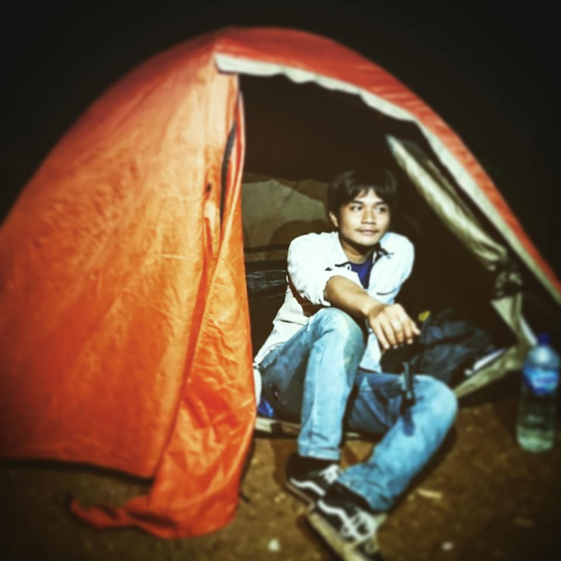
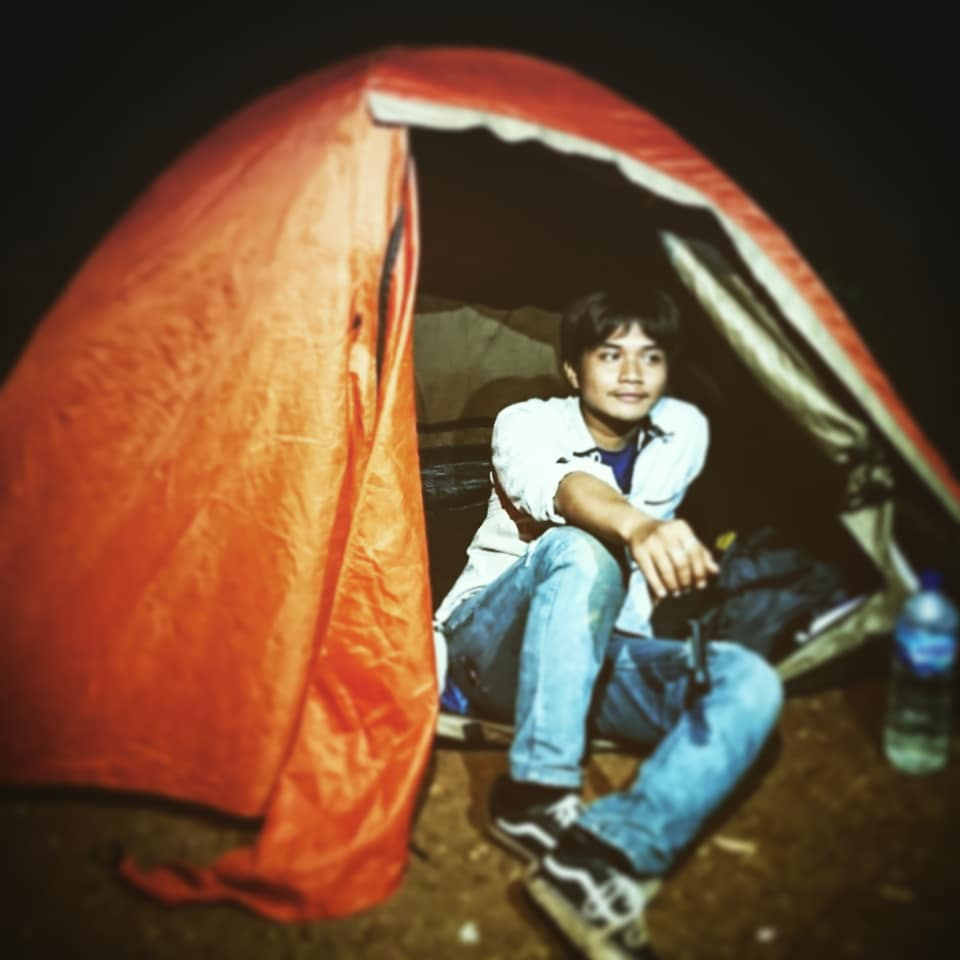

More information
Main Drum & nge-Band
Musik bukan hanya sekadar hobi bagi saya, tetapi juga cara untuk menyampaikan emosi dan menciptakan harmoni dalam tim. Sebagai drummer band, saya belajar tentang kekompakan, kreativitas, dan pentingnya bekerja sama dengan orang lain untuk mencapai satu tujuan. Kami sering tampil dalam berbagai event dan bahkan pernah meraih juara. Ini menjadi bukti bahwa kerja keras dan latihan membuahkan hasil.


Mendaki Gunung
Mendaki gunung mengajarkan saya arti ketahanan, konsistensi, dan saling menjaga dalam tim. Setiap langkah menuju puncak adalah simbol dari perjuangan saya dalam hidup: penuh tantangan, namun selalu ada keindahan yang menanti. Dari pendakian, saya belajar bahwa tidak semua hal instan—kadang perlu waktu, usaha, dan kesabaran luar biasa untuk meraih puncak harapan.


 

Belajar hal- hal baru seperti Sejarah & Sains
Saya adalah pribadi yang haus akan pengetahuan. Sejarah mengajarkan saya tentang nilai kehidupan dan kemanusiaan, sementara ilmu sains seperti kimia dan fisika membantu saya memahami alam semesta secara logis. Dengan semangat belajar tersebut, saya membuat channel YouTube yang menyederhanakan materi sejarah agar lebih menarik dan edukatif. Saya percaya, belajar adalah proses seumur hidup.

Jualan Cimin & Maklor
Di sela waktu, saya menjalani usaha kecil-kecilan menjual cimin dan maklor. Aktivitas ini mengajarkan saya arti tanggung jawab, ketekunan, dan bagaimana membangun relasi dengan pelanggan. Dari sini, saya belajar untuk tidak malu memulai dari bawah. Semua pekerjaan adalah mulia, selama dilakukan dengan ikhlas dan niat yang baik.

Membaca Buku
Membaca buku adalah salah satu cara saya memperluas wawasan dan menenangkan pikiran. Buku-buku tentang pengembangan diri, motivasi, hingga biografi tokoh inspiratif memperkaya pola pikir saya. Saya percaya bahwa setiap buku punya nilai yang bisa membentuk karakter kita menjadi pribadi yang lebih tangguh dan bijaksana.
Menonton Film
Saya juga menyukai film, baik fiksi maupun dokumenter. Dari film, saya belajar tentang budaya, empati, hingga strategi dalam kehidupan. Film adalah jendela lain untuk memahami dunia dan diri sendiri, sekaligus sarana hiburan yang penuh inspirasi.
🔥 Memiliki Semangat Juang Tinggi
Saya adalah pribadi yang semangat, jujur, disiplin, dan tidak mudah menyerah. Saya selalu percaya bahwa dengan kemauan kuat, kerja keras, dan semangat belajar tanpa henti, saya bisa mengatasi rintangan apa pun. Setiap pengalaman, baik suka maupun duka, saya jadikan pelajaran berharga untuk terus bertumbuh menjadi pribadi yang lebih baik.